Scaling the Horizon, Not the Parameters: Reaching Trillion-Parameter Performance with a 35B Agent / Agents-A1 精读笔记
Agents-A1 是上海人工智能实验室发布的 35B MoE agentic model，论文入口为 arXiv:2606.30616。论文给出的中心判断是：不要只把 agent 能力理解为“再扩大参数”，还可以把训练监督从静态文本扩展到更长的 knowledge-action 轨迹，让模型在搜索、工具调用、代码执行、科学分析和指令跟随等场景里学习如何持续获取证据、行动、观察、验证和修正。PDF 首页可核验到代码仓库 InternScience/Agents-A1 与模型页 InternScience/Agents-A1。一作团队按论文署名写作 Agents-A1 Team，主机构是 Shanghai Artificial Intelligence Laboratory。
长程 agent 的困难不只是缺少更大的模型参数，而是缺少能把外部知识、工具动作、环境观察和验证反馈连成可训练轨迹的基础设施；即使有专域能力，也很难把多步搜索、科学推理、工程优化、指令约束和工具调用这些异质行为合并到一个可部署模型中。
1. 背景和问题
这篇论文的标题把问题说得很直接：Scaling the Horizon, Not the Parameters。过去两年，大模型 agent 的能力提升经常被包装成更大参数、更强基座、更长上下文，但真实任务里的 agent 失败并不总是因为模型“想不出来”。在软件工程、科学研究、复杂决策和数据分析里，模型需要先拆任务，再查资料、调用工具、读返回、执行代码、检查中间产物，然后依据反馈改变计划。这里的难点是 horizon 很长：早期一次错误检索、一次错误工具参数、一次没有保存的中间结论，都会在后面叠加成更大的偏差。论文认为，如果训练数据只给最终答案或短链推理，模型很难学会这种持续交互中的纠错、证据追踪和目标保持。
作者把已有路线拆成两类。第一类是 parameter scaling：让更大模型在参数中内化更多领域知识、推理模式和工具使用习惯。这条路线确实有效，但复现门槛很高，且把长程 agent 的许多过程压缩进不可见的模型内部。第二类是 horizon scaling：把中间决策过程显式化，把知识获取、动作执行、观察解释和验证结果都变成训练监督。Agents-A1 选择第二类路线，但论文没有把它简化成“收集更长对话”。它强调长轨迹训练需要一个统一基础设施，能把外部知识、行动、观察和 verifier outcome 串起来；还需要把不同领域中不一样的 reasoning pattern 合并进一个模型，而不是让搜索 agent、科学 agent、工具 agent 各自孤立存在。
背景里的第一个瓶颈是知识基础设施。公开网页语料或普通指令数据通常只保存文本，不保存一次答案是如何通过搜索、页面读取、代码执行、证据验证和失败回滚得到的。没有这些过程记录，模型只能模仿最终表达，而学不到何时该查证、何时该重试、何时该保留失败证据。Agents-A1 的训练目标恰好是把这些过程变成监督：长程轨迹平均长度达到 45K tokens，轨迹中包含 action、observation、verification，而不是只含 prompt 和 answer。
第二个瓶颈是能力异质性。长程搜索偏好多轮工具调用和短步反馈，指令跟随可能偏单轮长思考，机器学习工程需要维护实验树、执行代码、比较指标，科学推理又要求符号推导和外部文献检查。论文观察到，full-domain SFT 会让某些域增强，同时也会让另一些域下降，这说明把所有轨迹直接混到一起并不自动得到统一 agent。Agents-A1 因此设计了 domain-level teachers 和 domain-routed on-policy distillation，让每个专域教师先学习自己的行为模式，再通过显著词表对齐和域归一化目标转移到一个 35B student。
这项工作的价值在于，它把“agent horizon”从口号落到三个可检查层面：数据层面有 Knowledge-Action Graph 与 self-play expansion；训练层面有 full-domain SFT、teacher training 和 multi-teacher OPD；评测层面覆盖长程搜索、工程、科学、指令跟随、通用工具任务和长程应用案例。需要保守看待的是，论文很多对照模型和部分 benchmark 属于技术报告之间的横向比较，环境、工具协议和官方结果口径并不完全统一。因此这篇更像一份 horizon scaling 的系统路线图和 early evidence，而不是“35B 已经全面替代 1T 模型”的终局证明。
2. 方法
2.1 三阶段训练总览
Agents-A1 的训练流程可以概括为三步：先用全域长程轨迹做 full-domain SFT，得到一个覆盖面广的长程 agent；再分别训练 search、science、instruction following、tool calling 等专域教师；最后让学生模型在自己的 on-policy rollout 上接受对应教师的 token-level guidance。真正的核心不是把教师参数合并，而是在学生自己生成的轨迹前缀上，让对应域教师评价“哪些局部词表选择更像专域策略”，再把这些偏好蒸馏回一个统一 student。
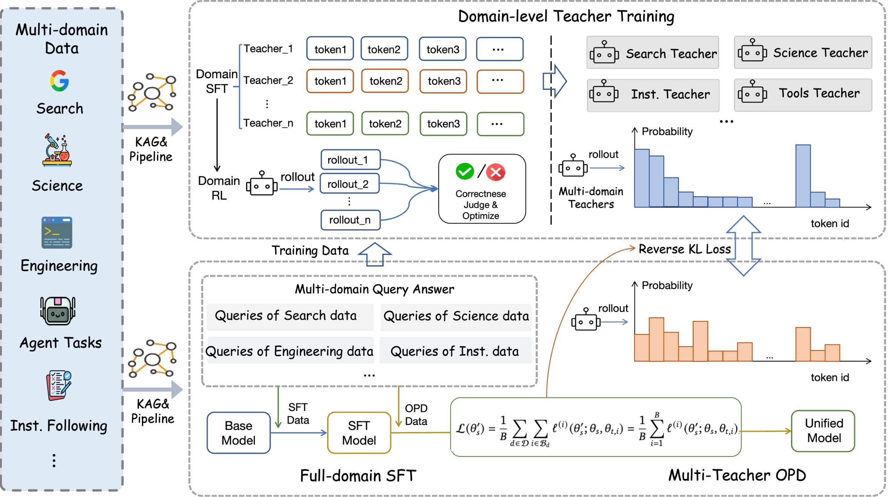
Figure 2 展示的是这篇论文的方法总图。左侧是 multi-domain long-horizon data，包括 search、scientific research、engineering、agentic tasks 和 instruction following；中间先做 full-domain supervised fine-tuning，使 Qwen3.5-35B-A3B 基座具备宽泛的 agentic behavior；随后对不同能力域训练 domain-specific teachers；右侧再用 multi-teacher on-policy distillation 把教师能力迁移回统一的 Agents-A1。读图时要注意箭头方向：不是先训练一个学生再离线模仿教师答案，而是让学生在各域协议下生成自己的轨迹，教师在这些前缀上提供路由后的监督。这样做的动机是减少离线 imitation 和部署时策略分布之间的偏差，同时避免不同域教师在同一 token 上互相平均、互相抵消。
从输入输出看，full-domain SFT 的输入是约 100K 条长程轨迹，输出是 Agents-A1-SFT；teacher training 的输入是各域子集和任务协议，输出是 search-enhanced、science-enhanced、long-instruction-enhanced、tool-enhanced 等教师；OPD 的输入是学生 rollout、域标签、教师池和可训练 token mask，输出才是最终 Agents-A1。训练时，工具返回、用户轮次和环境观察会保留在上下文中，但 loss 只作用在 student-generated tokens 上。这个设计很重要，因为 agent 轨迹里大量内容是工具观察或环境状态，不能把它们当作模型应当生成的答案去拟合。
2.2 Knowledge-Action Graph 与自博弈扩展
论文把长程 agent 能力拆成五个 atomic abilities：information acquisition、tool calling、executable iteration、evidence verification 和 constraint tracking。为了让这些能力有可训练对象，作者定义了 Knowledge-Action Graph。它不是传统知识图谱那种只存实体关系，而是把证据块、动作、工具返回、执行状态、验证结果和失败记录都作为一等对象，保留“答案如何被获得、验证、修正”的过程。
符号解释：$d$ 表示任务域；$C_d$ 是该域的 corpus，包含证据片段、实体、事实和约束；$A_d$ 是动作空间，包括检索查询、工具调用、代码编辑、代码执行和推理步骤；$O_d$ 是观察空间，包括工具返回、检索证据、执行日志和中间产物；$V_d$ 是 verifier set，用来检查正确性、证据支持、约束满足和目标完成度。这个公式的意义是把 agent 训练从“文本到文本”改写成“状态、动作、观察、验证”的图结构监督。
符号解释：$q$ 是任务指令，$d$ 是域标签，$\tau$ 是解题轨迹，$y^\star$ 是目标答案，$E_q$ 是任务必须覆盖的支持证据，$V_q$ 是适用的验证器子集。该公式来自 self-play task construction，用来确保生成任务不是随便提问，而是绑定证据和验证条件。
符号解释：$s_t$ 是第 $t$ 步状态，通常来自语料证据和此前观察；$a_t$ 是动作；$o_t$ 是动作产生的观察；$v_t$ 是该步触发的验证结果；$T$ 是轨迹长度；$y$ 是最终答案。这个表示把长程任务里的每一步都变成可回放、可检查的 action record。训练数据不仅保留成功路径，也保留失败、回滚和 verifier outcome，因而能提供跨步 credit assignment。
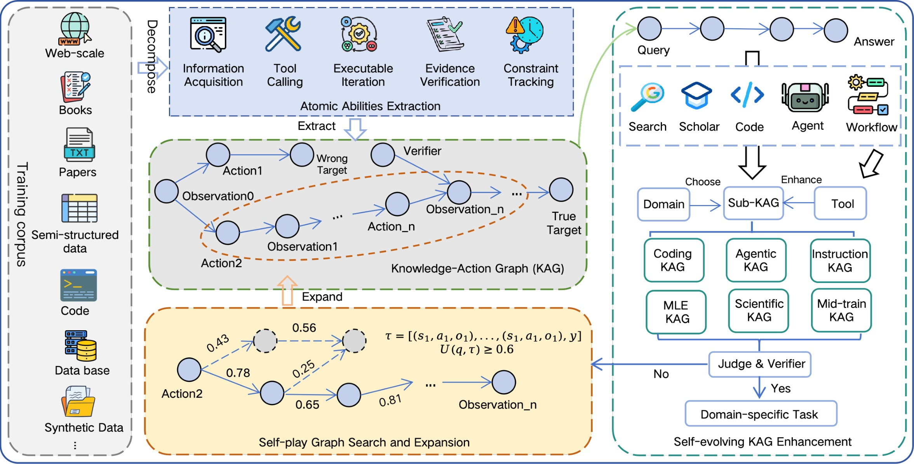
Figure 3 把 KAG 的构造方式画得更具体。顶部先从异质语料抽取 atomic abilities，再把 evidence、actions、observations、verifier outcomes 放进 KAG；下方的 self-play loop 通过 proposer、solver、verifier 反复扩展图，把失败任务返回重写，把合格任务写入 downstream data pipeline。这个图说明 Agents-A1 的 horizon scaling 并不是简单拉长上下文，而是先建立一个能生成、执行、验证、回写的任务工厂。对于推荐或搜索工程也有可迁移含义：如果只保存最终点击或最终答案，模型很难学到中间召回路径；如果保存候选生成、特征读取、工具返回和校验信号，训练才可能学习“为什么这一跳有用”。
2.3 Salient Vocabulary Alignment 与 domain-normalized OPD
OPD 阶段的难点是如何从多个教师中吸收能力而不让高频域或高 loss 域支配更新。论文采用 hard domain routing：每个样本只由对应域教师监督，不在 token 层混合多个教师。随后用 salient vocabulary alignment 处理 sampled-token OPD 的一个弱点：如果只约束学生实际采样出的 token，教师分布中附近的高概率替代 token 没有被约束，训练会不稳定。
符号解释：$i$ 表示样本，$R_i$ 是可训练的模型生成位置集合，工具返回和用户轮次被 mask；$S_{i,t}^{(k)}$ 是 routed teacher 在位置 $t$ 上的 top-$k$ valid tokens；$\bar{p}_{s'}$ 和 $\bar{p}_{t,i}$ 是学生和教师在这个 teacher-selected support 上重新归一化后的概率分布。该式是 truncated reverse KL，目标是让学生在教师认为显著的一小组候选 token 内靠近教师，而不是计算全词表 KL。
符号解释：$\rho(i,t)$ 是 student-side coverage，衡量学生原始分布中有多少概率质量落在教师 top-$k$ 支持集上。它不是主要 loss，而是监控 SVA 是否近似了全词表对齐。如果 coverage 太低，说明教师关注的显著词表和学生当前分布重叠不足，蒸馏信号可能不稳定。
符号解释：$B$ 是一个 mini-batch，$B_d$ 是其中属于域 $d$ 的样本子集，$D_B$ 是当前 batch 中出现的 active domains，$\theta_{t,i}$ 是样本 $i$ 的 routed teacher。这个目标先在每个域内部平均，再对 active domains 平均，因此长轨迹不会因为 token 多而天然占优，高频域也不会因为样本多而支配学生更新。这正是 Agents-A1 统一异质 agent 能力的关键：按域保留教师偏好，按域归一化更新强度。
2.4 专域教师训练与长程工具交互
专域教师训练覆盖四类主要行为。Search teacher 先对搜索轨迹做 SFT，再用 GRPO 强化多跳搜索，奖励包含 correctness、搜索效率、重复查询惩罚和格式校准；Science teacher 采用两阶段 SFT，先强化无工具科学推理，再接入 search、visit、code、scholar 等工具轨迹；Instruction teacher 用 verifiable constraints 和 long-context QA 做两阶段 RL，让模型更好满足格式、长度、关键词、语言和长上下文证据约束；Tool teacher 先做工具调用 SFT，再在 hard tasks 上用 outcome reward 与 process score 训练恢复、澄清和完成任务的能力。
符号解释：$\mathcal{R}$ 是一组 rubric 条件，$\mathbf{1}[\cdot]$ 是指示函数，$r_i^{\mathrm{proc}}$ 表示轨迹 $i$ 已满足的 rubric 比例。该过程分数主要服务于失败轨迹，因为失败样本之间仍然有“差一点成功”和“完全偏离目标”的区别。
符号解释：$A_i^{\mathrm{out}}$ 是 outcome reward 归一化得到的优势，$A_i^{\mathrm{proc}}$ 是只在负样本内部归一化的过程优势，$r_i^{\mathrm{out}}$ 表示任务是否最终成功。这里的非对称设计避免对成功样本重复计奖，只用过程分数区分失败样本的接近程度。它的风险是 rubric 本身如果偏离真实任务完成标准，失败轨迹的“部分正确”会被过度奖励，导致模型学到形式化进度而不是实际成功。
符号解释：$R$ 是 rollout rounds，$B$ 是 rollout batch size，$K$ 是每个 prompt 的采样数，$|D|$ 是 hard-task set 的任务数。论文在 tool RL 中只使用 64 个 hard samples，通过多轮复用放大梯度信号。这个设定说明 Agents-A1 并不是无节制堆数据，而是在可验证、近成功、能产生梯度差异的任务上反复采样；但它也意味着结果对 hard-task 质量和评估器可靠性很敏感。
3. 实验结果
3.1 总览成绩与跨域对比
论文的实验覆盖长程搜索、工程任务、科学研究、长上下文与指令跟随、通用 agentic tasks、科学工具任务和两个长程应用案例。作者报告 Agents-A1 在 SEAL-0、IFBench、HiPhO、FrontierScience-Olympiad、MolBench-Bind 等任务上达到或超过部分 1T 级模型，同时在 SciCode、HLE、BrowseComp 等任务上保持竞争力。这里需要先说明口径：Table 9 中一部分 1T 模型结果来自其原始技术报告，部分缺失结果由作者按同协议评测；不同模型的工具可用性、推理 effort、评估环境并不完全等价，所以它是技术报告级横向比较，不等同于统一封闭 leaderboard。
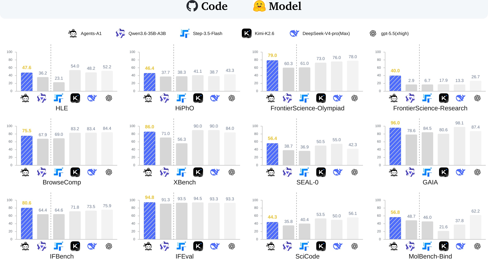
Figure 1 是论文首页的总览图，用多个小柱状图展示 Agents-A1、Qwen3.6-35B-A3B、Step-3.5-Flash、Kimi-K2.6、DeepSeek-V4-pro(Max) 和 gpt-5.5(xhigh) 在 HLE、HiPhO、FrontierScience、BrowseComp、XBench、SEAL-0、GAIA、IFBench、IFEval、SciCode、MolBench-Bind 等任务上的得分。最值得读的是它的分布形态：Agents-A1 并不是每个任务最高，例如 BrowseComp 和 XBench 仍落后强 1T 模型，但在 SEAL-0、GAIA、IFBench、FS-O、FS-R 等任务上有明显竞争力。它支持作者的主张：当任务需要持续搜索、工具交互、科学推理或长指令约束时，35B agent 通过 horizon scaling 可以缩小与更大模型的差距。不过该图没有展示置信区间和评测成本，不能单独证明同等资源下的性价比。
3.2 数据规模与训练设置
训练数据方面，full-domain SFT 使用约 100K 条轨迹，整体平均长度 45K tokens。Table 2 给出不同数据源的平均长度：deep research 44K、coding and engineering 48K、scientific reasoning and problem-solving 37K、instruction following 3K、general agentic tasks 39K，整体 45K。这个分布说明 Agents-A1 的“长”主要来自深度研究、工程、科学和 general agentic tasks，而不是每个域都强制拉长；instruction following 平均只有 3K，更多承担格式、约束和长上下文规则适配。
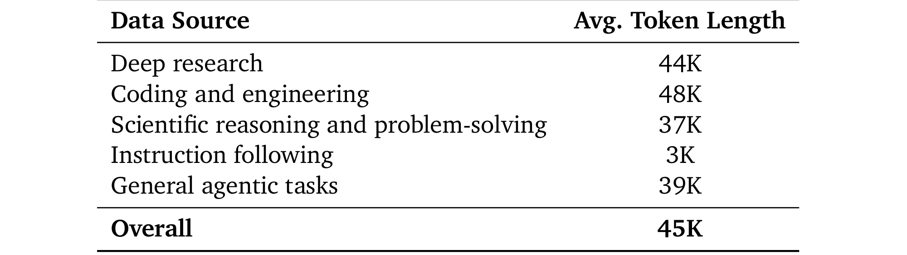
Table 2 作为数据证据很关键，因为它把“平均 45K token”拆开了。Deep research、coding/engineering、scientific reasoning 和 general agentic tasks 都是长轨迹来源，这些域天然包含多步检索、代码执行、日志观察和中间产物；instruction following 则短得多，说明作者没有把简单约束任务硬拉成长对话。对于读者判断可复现性，这张表也暴露了成本压力：如果要复刻 Agents-A1，不只是需要 35B MoE 基座，还需要能生成、过滤、回放和验证数万 token 长轨迹的数据管线。论文说所有数据经过质量过滤、去重和人工审核，但没有展开每个域的审核规模与错误率，因此数据质量仍是主要不确定项。
3.3 从基座到 SFT 再到 OPD 的增益
Table 4 是理解 Agents-A1 是否真的由三阶段训练带来提升的主表。它比较 Qwen3.5-35B-A3B、Agents-A1-SFT 和 Agents-A1。在长程搜索上，GAIA 从 59.8 到 95.2 再到 96.0，SEAL-0 从 41.4 到 52.3 再到 56.4；工程任务上，SciCode 从 37.1 到 42.3 再到 44.3，MLE-Bench-Lite 从 24.2 到 39.4 再到 43.9；科学研究里 FS-R 从 2.5 到 31.7 再到 40.0。SFT 显然带来长程任务增益，但也出现下降：HLE w/tools 从 47.4 降到 41.6，IFBench 从 70.2 降到 68.7，tau2-Bench 从 81.2 官方值或作者复现 32.5 的复杂口径变成 76.7。
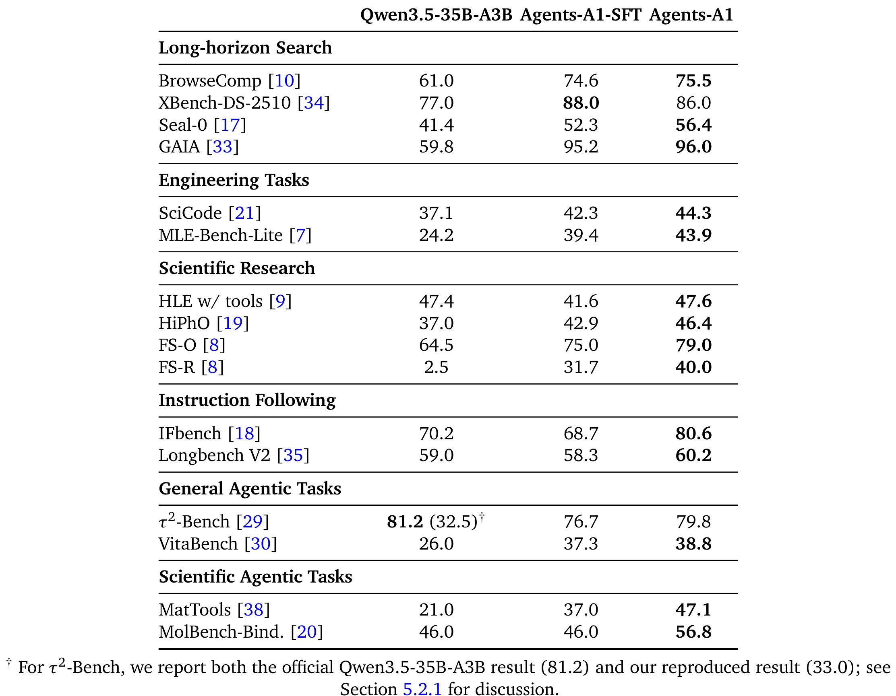
Table 4 的读法不应该是“每一项都稳定上升”，而是看到 full-domain SFT 的冲突：它把模型推向长程多轮 agentic pattern，但可能削弱单轮长思考或精细指令跟随。OPD 的价值正是在这个冲突上做平衡。比如 IFBench 从 SFT 的 68.7 提升到 80.6，HLE w/tools 回到 47.6，FS-R 从 31.7 提升到 40.0。与此同时，XBench 从 88.0 降到 86.0，说明 OPD 不是简单单调增强，而是在统一模型中做跨域折中。这个表也提醒读者：多域 agent 训练的指标组合很容易被平均值掩盖，必须看哪些域被加强、哪些域被牺牲、最终模型想服务哪类长程任务。若只看“Agents-A1 相比基座多数提升”，会忽略一个更实际的问题：训练一个统一 agent 时，搜索、工程、科学、指令和工具调用并不是同一种行为分布，某个域的高质量轨迹可能会把模型带向另一个域不需要的思维节奏。因此 Table 4 更像一张冲突诊断表，而不只是成绩表。
3.4 专域教师的中间证据
专域教师结果用 Table 5 到 Table 8 展示。Search teacher 在 GAIA 上从 59.8 提到 95.1，在 Seal-0 上从 41.4 到 54.1，在 XBench-DS-2510 上从 77.0 到 86.0。这个结果说明 search SFT+RL 确实学到更好的 query formulation、page reading、证据整合和停止搜索策略。它也解释了为什么最终 Agents-A1 在长程搜索和科学工具任务上有优势：这些能力不是直接来自参数更大，而是来自有 verifier 的搜索轨迹和教师策略。
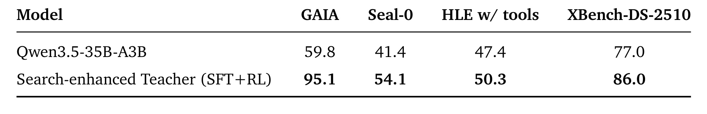
Table 5 的信息量在于四个指标方向一致。GAIA 的提升最大，说明多步搜索和答案验证是 search teacher 的强项；HLE w/tools 只有 2.9 分提升，说明专家级知识任务不只依赖搜索，还需要更强科学推理和工具整合。对于工程使用者，这个表也给出一个实践线索：如果线上 agent 的瓶颈是“查不到证据”或“反复查同一个页面”，单独做搜索轨迹 RL 可能比直接扩大模型更有效；但如果瓶颈是复杂推导或长期状态记忆，搜索教师只能解决一部分。还要注意，表里没有展示搜索轮数、访问页面数量、失败查询类型和 verifier 误判率，所以它证明的是“结果指标提升”，不是完整解释了搜索行为为何变好。后续复现时最好把搜索效率、重复查询惩罚、页面阅读质量和最终答案正确性拆开看。
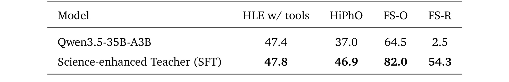
Table 6 展示 science-enhanced teacher 的效果。HLE w/tools 从 47.4 到 47.8，提升很小；HiPhO 从 37.0 到 46.9，FS-O 从 64.5 到 82.0，FS-R 从 2.5 到 54.3。FS-R 的跃升尤其大，说明两阶段科学 SFT 对研究级任务的帮助明显：先用无工具高质量推理强化内在推导，再用 search、visit、code、scholar 的工具轨迹训练外部证据交互。需要谨慎的是，science teacher 是专域模型，不需要同时维持其他 agent 行为；最终 OPD 后的 Agents-A1 在 FS-R 是 40.0，低于 teacher 的 54.3，这正体现了统一模型和专域最优之间的差异。
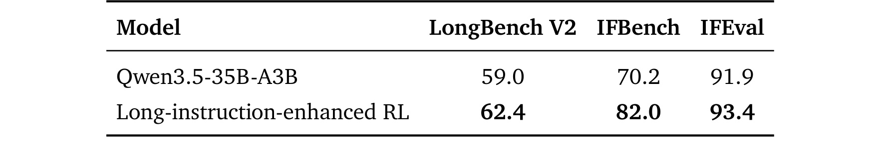
Table 7 关注 LongBench V2、IFBench 和 IFEval。LongBench V2 从 59.0 到 62.4，IFBench 从 70.2 到 82.0，IFEval 从 91.9 到 93.4。它说明 RL 不只增强工具调用，也能增强长上下文 evidence grounding 和规则约束满足。对 agent 场景来说，这类能力很容易被低估：如果模型不能稳定遵守输出格式、字数、关键词、语言和局部规则，那么再强的搜索或代码能力也可能无法被系统可靠调用。Agents-A1 把这类能力作为一个独立教师训练，再迁移到统一模型，能降低长程执行中的格式和约束失败。从产品角度看，这个表对应的是 agent 的“可编排性”：同样是给出答案，能不能按协议返回、能不能引用长文里的局部规则、能不能抵抗 distractor，决定了它能否接入真实工作流。它也是 OPD 需要存在的原因之一，因为长指令跟随和多轮搜索的节奏差异很大。
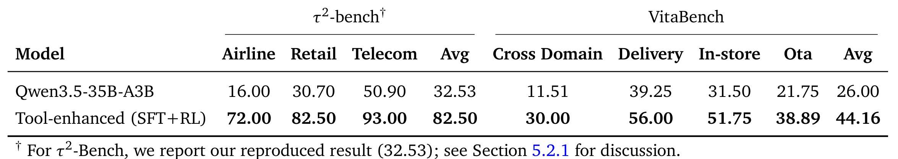
Table 8 展示 tool-enhanced teacher 在 tau2-bench 和 VitaBench 上的提升。tau2-bench 平均从作者复现的 32.53 到 82.50，Airline 从 16.00 到 72.00，Retail 从 30.70 到 82.50，Telecom 从 50.90 到 93.00；VitaBench 平均从 26.00 到 44.16。这类任务更像真实业务操作：多轮对话、状态更新、工具参数、错误恢复和完成判断都要正确。表中提升说明，tool calling 不是只靠 SFT 学会 JSON/schema 格式就够了，必须通过 outcome reward 和 process reward 训练整条轨迹。局限是作者也承认 tau2-bench 存在复现口径差异，官方 Qwen3.5-35B-A3B 与作者复现值相差很大，因此这里更适合作为“同一复现环境下的教师训练增益”，不应和外部官方榜单直接混用。
3.5 与 35B 和 1T 级模型的横向比较
最终横向比较在 Table 9。Agents-A1 与 Qwen3.6-35B-A3B、Nex-N2-mini 这些 35B 级模型相比，在多数 long-horizon search、engineering、scientific research、instruction following 和 scientific agentic tasks 上更强。与 1T 级模型相比，Agents-A1 在 Seal-0 得 56.4，高于 Kimi-K2.6 的 50.5、DeepSeek-V4-Pro(Max) 的 55.0 和 GPT-5.5 的 42.3；GAIA 为 96.0，接近 DeepSeek-V4-Pro(Max) 98.1，高于 Kimi-K2.6 80.6 和 GPT-5.5 87.4；FS-O 为 79.0，高于表中三个 1T 对照的 73.0、76.0、78.0；FS-R 为 40.0，也高于 1T 对照。
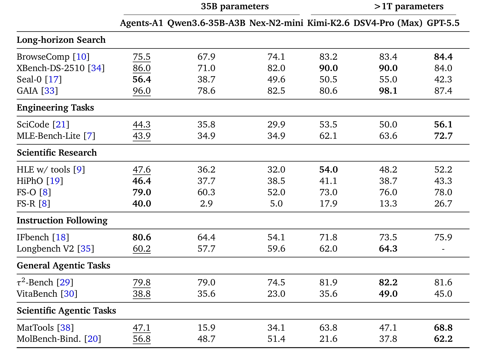
Table 9 也显示了边界。BrowseComp 上 Agents-A1 是 75.5，低于 Kimi-K2.6、DeepSeek-V4-Pro(Max) 和 GPT-5.5；XBench-DS-2510 是 86.0，低于 1T 对照中的 90.0；SciCode 是 44.3，低于 1T 级模型的 53.5、50.0、56.1；MLE-Bench-Lite 是 43.9，而 GPT-5.5 是 72.7。作者解释 MLE optimization 不是静态解题，而是完整工程过程，需要长期目标稳定、记住过去决策、避免重复试错。这个解释与方法动机一致，但也暴露 Agents-A1 的不足：horizon scaling 让 35B 在部分长程任务上接近 1T，但在高强度工程优化和广泛网页搜索上仍不全面领先。
3.6 长程应用案例
论文最后给出两个长程应用案例。第一个是 ICML 2013 Whale Challenge 的 right whale call detection 任务。Agents-A1 从 naive CNN baseline 开始，在 12 小时内做 temporal data analysis、audio augmentation、temporally localized training、Mel-spectrogram CNN ensemble 和大规模增强，最终把 best validation AUC 从 0.58 提到 0.9935，达到 gold-medal-level。这个案例不同于普通 benchmark，因为它要求模型在许多次实验之间保持目标、记录发现、比较指标、选择下一步干预。
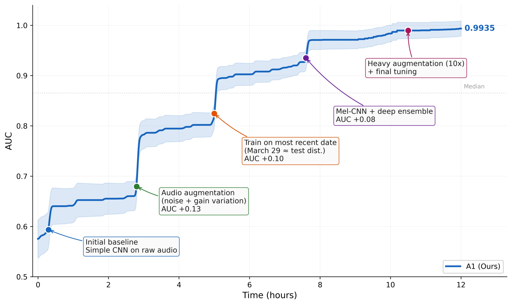
Figure 4 的曲线展示了 AUC 随 wall-clock time 的提升，并标注几个突破点。它证明的不是单次 prompt 的聪明程度，而是 agent 是否能把数据诊断、表示设计、增强策略和迭代评估连成一条可解释路径。读图时要关注两点：一是 AUC 提升不是平滑线性，而是由几个算法改动触发跃迁；二是阴影带表示不同 seeds 的方差，说明该过程并非完全确定。对工程落地来说，这类长程优化能力很有价值，但也要求执行环境、日志管理、实验隔离和验证器足够可靠，否则 agent 很容易被偶然验证集收益误导。
第二个案例是 Severe Cyclonic Storm Nargis 的地球科学分析。Agents-A1 自动识别 IBTrACS 作为数据源，完成数据抽取、清洗、派生指标计算、可视化和结果综合，形成从 planning、coding、execution、result checking 到 scientific analysis 的闭环。它复原了 Nargis 在孟加拉湾形成、西北移动、转向东北、登陆缅甸南部等主要演变，并同时保留 WMO/IMD 与 JTWC/USA 两套强度估计，避免混淆不同业务口径。
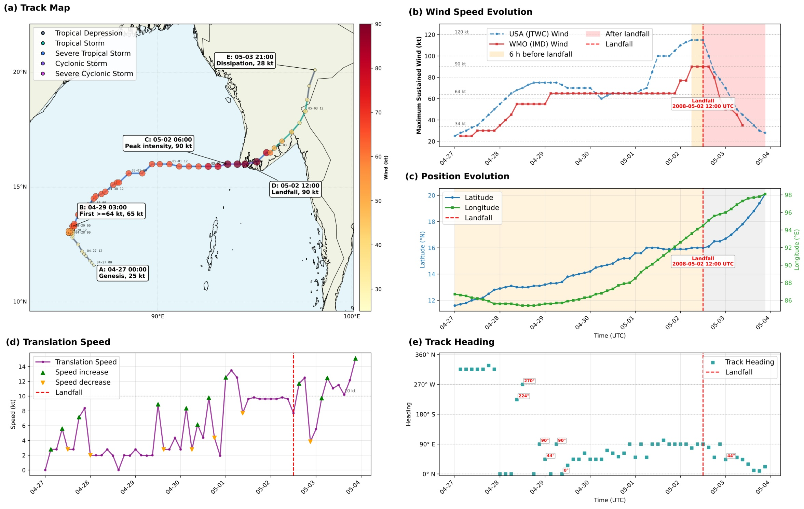
Figure 5 是一个多面板科学分析图，包含路径地图、最大持续风速时间序列、经纬度变化、移动速度和航向变化。它的意义在于展示 Agents-A1 能不能把真实数据源、领域单位、不同机构口径和可视化诊断统一起来。这个案例比普通问答更接近“研究助理”任务：模型需要决定数据源、写代码、检查结果、解释物理过程，并在报告中保留口径差异。风险同样明显：论文展示的是代表性 case，不是大规模统计评测；如果数据源文档、单位转换或缺测处理发生错误，漂亮的图也可能掩盖分析偏差。尤其是热带气旋数据存在不同机构的风速平均时长、强度分类和最佳路径修订口径，模型如果没有把这些口径写入中间状态，就可能在最终报告中混合不可比数字。因此这个案例真正考验的是“数据工程加科学解释”的闭环，而不只是生成一张多面板图。
4. 总结
4.1 我的判断
Agents-A1 最有价值的地方，是把长程 agent 的能力问题拆成了可操作的工程结构：先有 Knowledge-Action Graph 和 verifier-backed trajectories，再有专域教师，最后用 domain-routed OPD 统一能力。它没有把“agent 能力”神秘化，而是明确指出模型需要学习哪些动作、观察和验证链条。对大模型工程来说，这比单纯比较参数量更有启发：如果一个业务 agent 反复失败，应该先问有没有保存中间动作、证据、工具返回、失败原因和校验结果，而不是直接假设只能换更大的模型。
但这篇论文也有四个明显局限。第一，许多结果是技术报告级横向比较，模型、工具和评估协议不完全统一，尤其 1T 对照的复现实验口径需要继续核验。第二，数据基础设施成本很高，平均 45K token 的轨迹、self-play expansion、verifier 和人工审核并不容易复刻。第三，OPD 后的统一模型并不总能超过专域教师，说明多域统一仍然有不可忽视的能力折中。第四，长程案例展示很有说服力，但样本量有限，尚不足以证明在广泛开放任务中稳定达到同等水平。
4.2 工程启发与复现建议
如果要复现或迁移这条路线，第一步不是训练 OPD，而是先定义业务域的 KAG：哪些内容是 corpus，哪些操作是 action，哪些返回是 observation，哪些规则能做 verifier。第二步要把失败轨迹保存下来，因为长程 agent 的改进往往来自“哪里查错、哪里重复、哪里过早停止”。第三步可以先训练小规模 domain teacher，而不是一开始就追求统一模型；如果某个教师在自己的域里都没有显著提升，OPD 也很难凭空产生能力。第四步要把评测拆成过程指标和最终指标，避免只看最终 pass/fail 而不知道 agent 是靠捷径、猜测还是稳定流程完成任务。
后续值得跟进三类问题。第一，Agents-A1 开源代码和 Hugging Face 模型的实际可用性、许可证、推理工具协议是否足够完整，决定它能否被社区复验。第二，SVA 中 top-$k$ support、coverage threshold、domain routing 和 batch 域均衡的细节会影响跨域迁移质量，值得看后续消融。第三，长程工程优化和科学分析案例需要更多任务和失败样本，尤其要报告成本、运行时间、人工介入、验证器错误率和不同 seeds 的稳定性。总体上，Agents-A1 不是证明“35B 总能击败 1T”，而是提供了一条更可复用的思路：把能力扩展目标从参数规模转向可验证的长程交互轨迹。